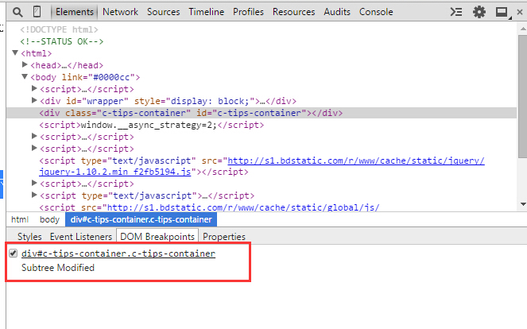
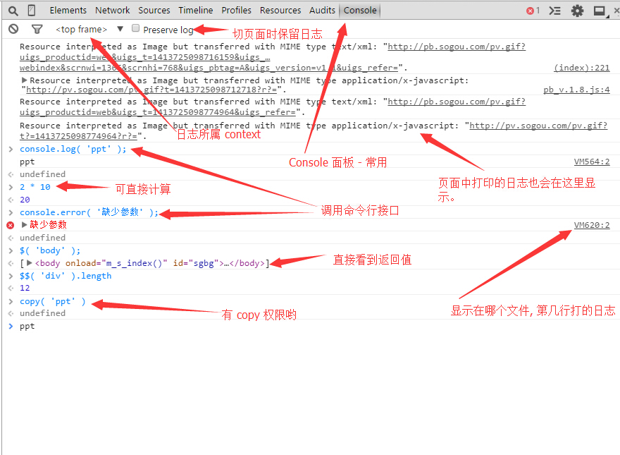
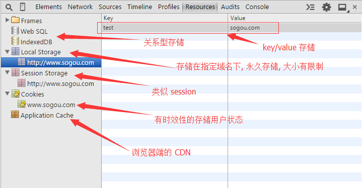

Chrome Developer Tools
redky@qq.com
内容简介
- Overview
- Elements
- Console
- Network
- Sources
- Audits
- Timeline
- Resources
Overview
- Chrome Version - Stable/Beta/Canarytry
- Chrome URLS: chrome://chrome-urls/ chrome://flags/
- 启用实验性 JavaScript enable-javascript-harmony
- 启用实验性网络平台功能 - Chrome Developer Tools
- 打开 DevTools 方式以及它呈现的状态
- 支持调试 SASS
- 配合 chrome mobile 调试移动页面
- 使用 Snippets 存储代码片段
- 开发者工具本身也是网页
Elements
- 左上角 Search 图标选择 DOM 节点
- 查看 DOM Tree 结构(子元素 - 左右箭头)
- 搜索 - Ctrl + F/ Ctrl + Shift + F
- 修改 Tag 和 Attribute - Ctrl + Z
- 移动 DOM 结构 - 鼠标选中后, 直接拖动
- 复制 HTML 结构
- 修改 HTML 字符串 - F2/右键
- 鼠标放到图片地址上可查看图片细节
- 查看用户样式和层叠关系 - user/author/userAgent
- 添加(选择器)/删除(临时取消)/修改样式
- 强制显示伪类样式
- 切换颜色表示方式(Shift + 点击)
- 查看元素盒子模型
- 右键取当前元素的 CSS 选择器和 xpath
Elements - DOM BreakPoints


Elements - Event Listeners
Console - Console API
- console.log( x, y, z ); //
console.log( '%c%s', 'color: red', 'Message' )
- console.debug/console.warn/console.error
- (*)console.time( timeTag );console.timeEnd( timeTag ); // 代码执行了多久
- (*)console.count( name ); // 代码执行了多少次
- (*)console.trace( function_name ); // 函数调用栈
- (*)console.table( list[, filter] ); // 以表格形式展现数据
- console.assert( Boolean, description ); // assert 测试, 只会在错误时, 以红色打印 log
- console.clear();
Console - Command API
- $_ - 命令行上一次运行的结果
- $()/$$()/$x()
- $0/$1/$2/$3/$4
- monitor(fname)/unmonitor()
- monitorEvents( node, [eventname] )/unmonitorEvents( node )
- keys( object )/values( object )
- copy - 高权限
Console - Others
- 按
Esc键, 显示 Console 辅助面板
- 输入多行代码 - Shift + Enter
- 不同 context 下的 Console - iframe/content_scripts
- 右键菜单 - 打印 XMLHttpRequest 请求日志
- 过滤 - 查看不同级别日志信息(All/Errors/Warnings/Logs/Debug)
- 持久化日志 - Preserve log
- 清除日志数据 - (Ctrl + L) 或者
console.clear();

Network
- 当前页面请求的资源列表
- 单个资源的路径
- 查看单个资源的请求细节信息 - Header/Response/Cookie/Timing
- 资源的请求方法 - GET/POST
- 请求返回状态码 - 200/301/302/304/404/500/502
- 资源的 Meta 类型 - text/html, text/css, text/javascript, ...
- 资源文件的大小
Network
- 过滤 - 只查看 XMLHttpRequest 请求/图片资源....
- 不显示 data 协议
- 开发者工具打开状态时, 禁止缓存
- Ctrl + F 搜索匹配的资源
- 持久化资源日志列表
- copy 资源的 URL/Headers...
- 资源加载时间线
- 查看页面总资源数和加载时间
Sources(*)
- 格式化 CSS/JavaScript 代码
- 代码记事本 - Snippets
- 查看不同 context 下代码 - webpage/extention
- 修改 CSS, 可实时生效, Save/Save as, 还有更新记录
- 可用来 Debug JavaScript
- 行号断点和条件断点
- 断点类型 - User/DOM/XHR/Event(根据类型)
- 可查看调用栈 - 断点处变量的作用域
- 跳过断点/跳过函数调用/进入函数调用/跳出函数调用
- 异常时自动断点/临时取消所有断点
Sources(*)
- Ctrl + O - 打开文件
- Ctrl + G - 定位到行
- Ctrl + F - 在文件中搜索
- Ctrl + Shift + F(text/regexp) - 在所有资源中搜索
- Ctrl + Shift + O - 在文件中定位函数
- Alt + 左键 - 列操作
Resource
- Cookie
- Session
- LocalStorage
- SessionStorage
- IndexedDB
- Application Cache - manifest.xml

参考和资源扩展
- https://developer.chrome.com/home
- https://developer.chrome.com/home/devtools-pillar
- https://developer.chrome.com/devtools/docs/console
- https://developer.chrome.com/devtools/docs/tips-and-tricks
- https://developer.chrome.com/devtools/docs/shortcuts
- https://developer.chrome.com/devtools/docs/css-preprocessors
- http://weibo.com/fekb